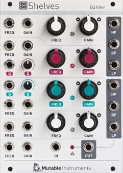

Key data
EQ filter
| Parameter | Value |
|---|---|
| Width | 18HP (Original: 16HP+4HP expander) |
| Depth | 25mm |
| +12V current | 75mA |
| -12V current | 75mA |
| Lifetime | 01/15 to 04/21 |
| Modulargrid | 2015 version, Original |
Original printed manual
Features
Controls
The low-shelf, high-shelf, and parametric sections all share the same control ranges and scales:
- Correction frequency range: 20 Hz to 20kHz.
- Correction frequency CV scale: 1V/Oct.
- Cut/boost range: -15dB to 15dB (knob), -40dB to 15dB (CV).
- Cut/boost CV scale: 3dB/V.
- Parametric correction Q: 0.5 to 20 (up to 1000 with external CV offset).
The global frequency offset and cut/boost CV inputs affect all sections.
Outputs
The two parametric sections are realized with state-variable filters with individual BP, HP and LP outputs.
Specifications
- Analog, DC-coupled signal path.
- Input impedance 100k (25k for the global frequency and gain CV inputs).
- All CV inputs handle audio-rate modulations.
Revisions and variants
2015
Hardware revision labelled "v6" which includes six individual outputs derived from the two parametric sections. Originally, they were available on a separate 4HP expander.